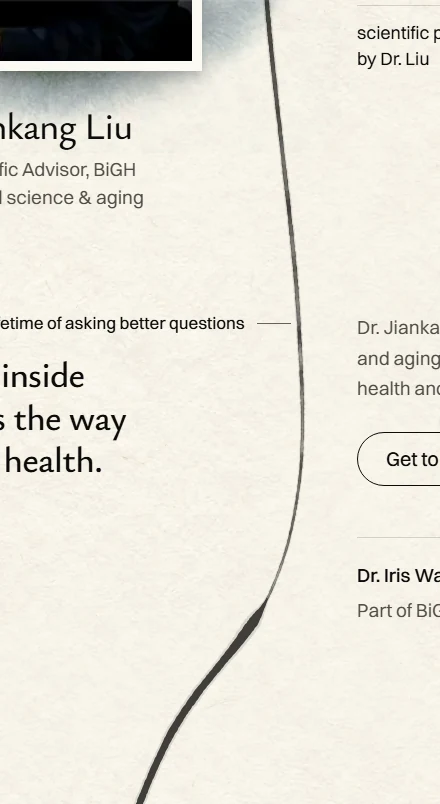
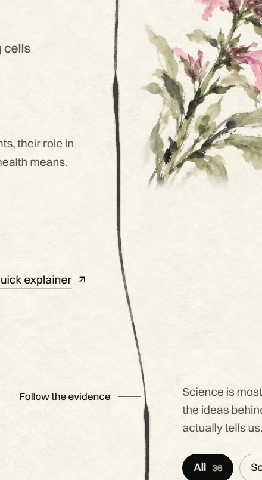
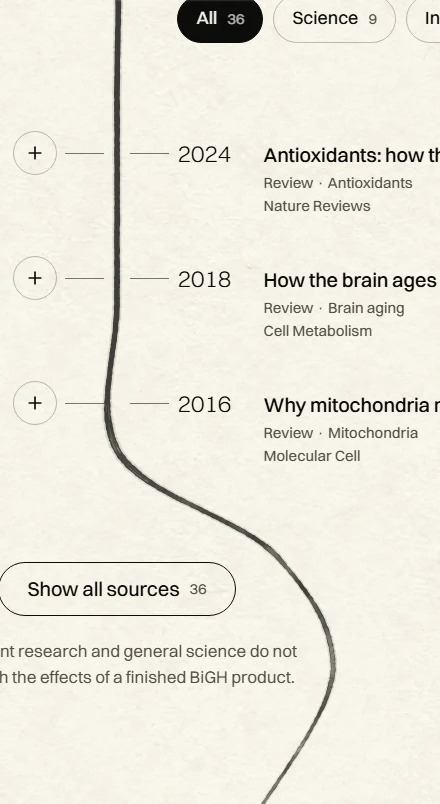
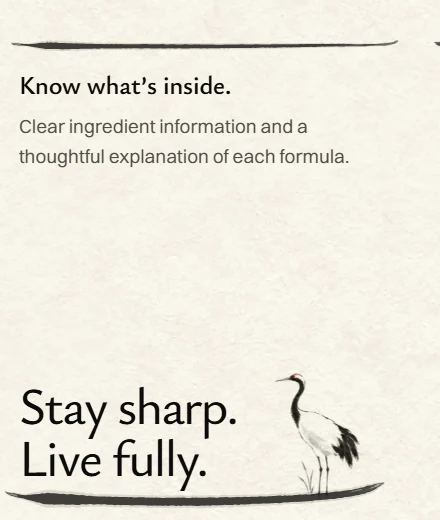

The homepage brush line, four weights
The same line at four thicknesses. Tap a weight; every picture below switches. Desktop pictures, shown about real size.

Dr. Liu's section. The long line running down the page.

The science section. Where the brush reloads, it lands heavier.

The research list. A curve where the ink runs dry.

The end of the page. A short rule, then the closing stroke under the crane.
What changes
- The long line gets thicker, top to bottom.
- The crane's stroke at the very top stays as it is.
- The two heaviest marks (under the big bottle, under "Stay sharp") get only a little heavier, so they don't turn into dark slabs.
- Phones have no long line. There, only the three short rules and the closing stroke change.
My score for B: 8 / 10. What holds it back: on dry curves the thicker line shows fine brush streaks. At C they can read as two thin lines.